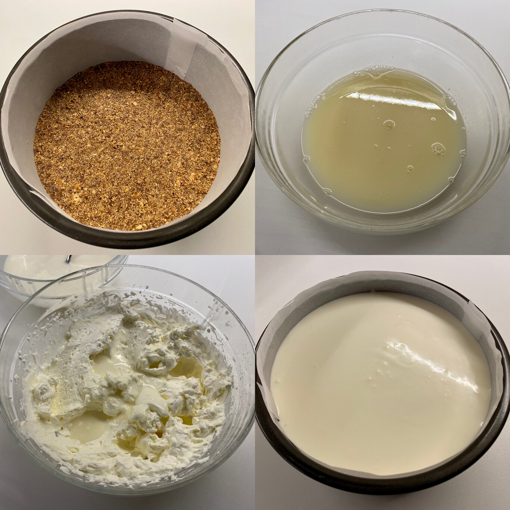

Trituramos finamente las galletas y las mezclamos con la mantequilla, previamente fundida , y el anís. Cuando tengamos una masa homogénea, cubrimos con ella la base de un molde desmoldable forrado con papel vegetal. Reservamos
Ponemos las hojas de gelatina en remojo en un cuenco con abundante agua fría , durante cinco minutos. Calentamos el zumo de limón y el azúcar en un cacito. Cuando el azúcar se disuelva, lo retiramos del fuego y añadimos la gelatina hidratada y escurrida. removemos para incorporar.
Por último añadimos el yogur griego y removemos nuevamente hasta homogeneizar. Trasladamos la mezcla a un cuenco para que se atempere más rápido. Mientras tanto montamos la nata, que habrá de estar muy fría, junto con el azúcar glasé. Mejor si usamos unas varillas eléctricas.

Cuando la nata esté montada y la mezcla de limón se haya atemperado, unimos ambas. Para evitar un choque térmico y que salgan grumos de gelatina, añadimos un par de cucharadas de nata montada al cuenco con el zumo de limón. Removemos para integrar y repetimos la operación.
A continuación incorporamos el contenido del cuenco con el limón al cuenco con la nata montada. Lo hacemos poco a poco, removiendo bien después de cada añadido con movimientos envolventes para evitar que la nata pierda volumen.
Rellenamos el molde con la mezcla obtenida y guardamos en la nevera hasta que tome cuerpo. Lo ideal es dejar reposar la tarta de un día para otro. Cuando esté lista para servir, la desmoldamos y decoramos al gusto.